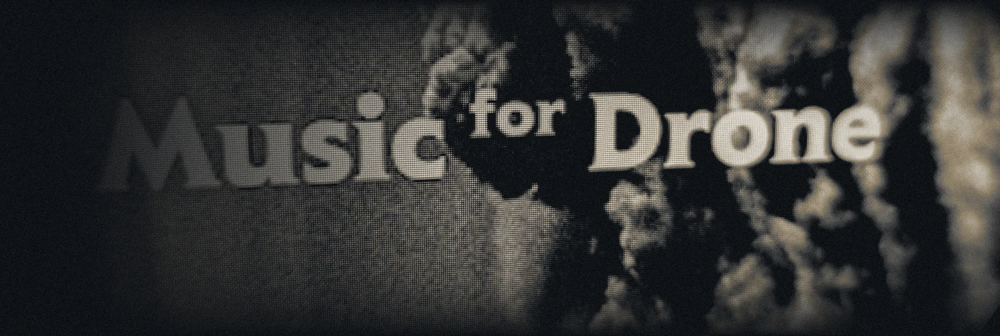

Tap along to a click to set the offset for your speakers or headphones. Y on a controller.
Working…

Rhythm prototype, build 0.7. Music and artwork by Snasen.
Tap along to a click to set the offset for your speakers or headphones. Y on a controller.
Normal
| Judgement | Window | Notes |
|---|---|---|
| Perfect | ±45 ms | 0 |
| Great | ±90 ms | 0 |
| Good | ±135 ms | 0 |
| Miss | outside | 0 |
Your timing, early to late
D-pad or stick to choose · A select · B setlist · Start retry
Audio offset
Use the speakers or headphones you play with. You'll hear four count-in clicks, then twenty more: tap on each one with any key, the circle, or a controller button.
Current offset: 0 ms. Bluetooth headphones often need +150 ms or more; wired headphones and built-in speakers usually sit within ±40 ms.
Working…